| 日付 | 2022年1月23日（日） |
|---|---|
| メンバー | 家族（妻、長女・10歳、長男・8歳） |
| アクセス | 車 |
妻が先週シダンゴ山に登った際に、駐車場にストックを忘れ
今週取りに行くことにする。
ついでに山の麓にある寄ロウバイ園を見学することにする。
8:30に駐車場に車を停める。
開園は9時だが続々と車が入ってくる。
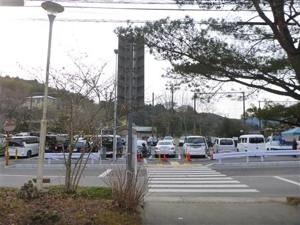
ロウバイ園までの道標は完備されている。
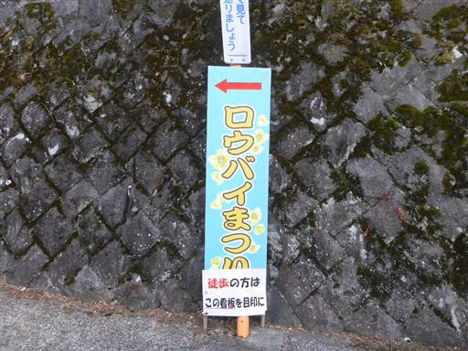
ロウバイ園の外にもいくらかロウバイが植わっている。
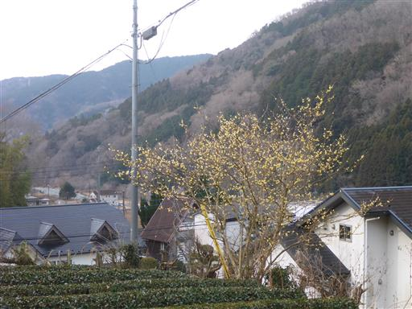
ロウバイ。ほのかな香りがする。
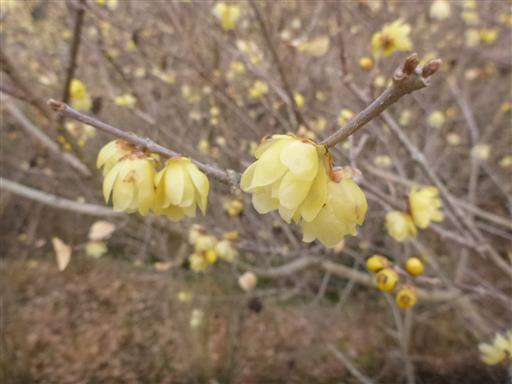
ストックを取り置きしてもらっていて、無事受け取る。
入園料500円/人を払って入園。
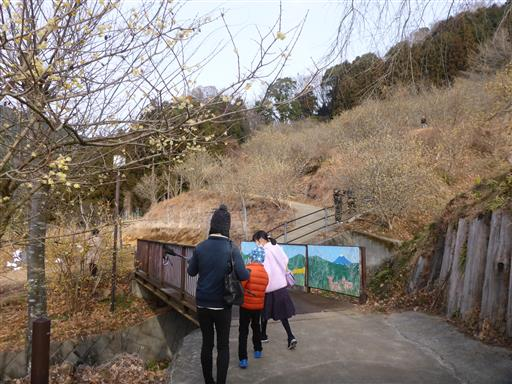
ロウバイを観察しながら、斜面に付けられた遊歩道を歩く。
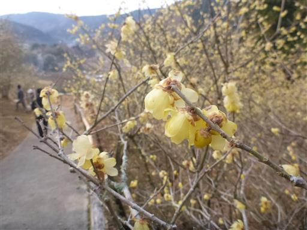
多くのロウバイが咲いているが、茶色い実と混ざっていて少々見た目が悪い。
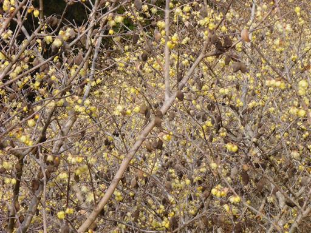
遠くから見渡す方が美しい。
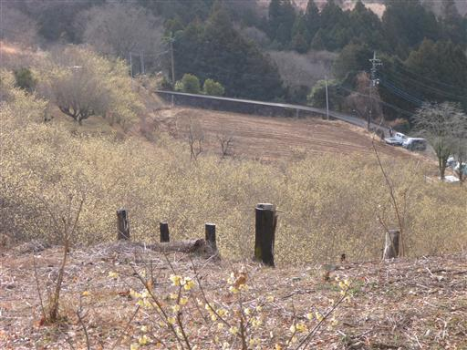
いまだに手を繋いで歩く人たち。
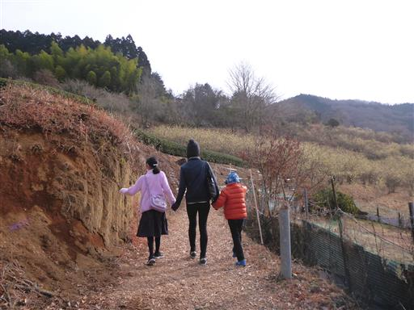
所々お茶畑が広がる。
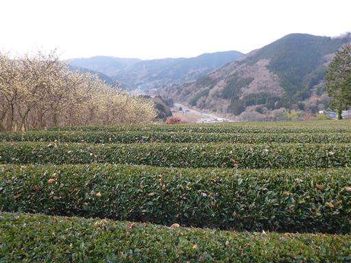
一番標高の高い場所に到着。ここは展望台になっている。
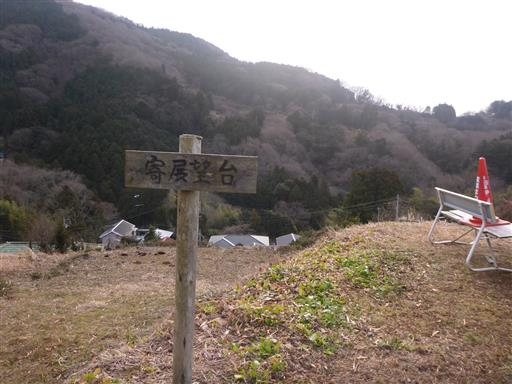
寄の街が見下ろせる。
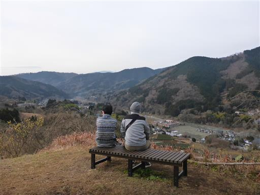
眼下にはロウバイ。
このロウバイ園は、荒廃地に2005年中学卒業生が記念植樹したのが始まりらしい。
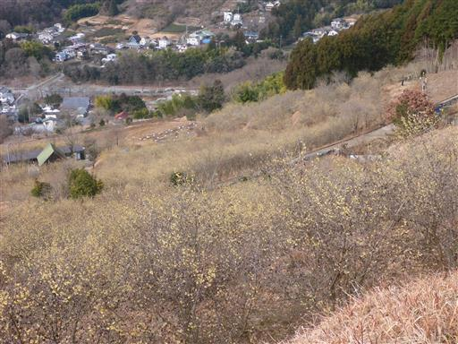
ロウバイ園を順路に沿って、ぐるっと一周歩く。
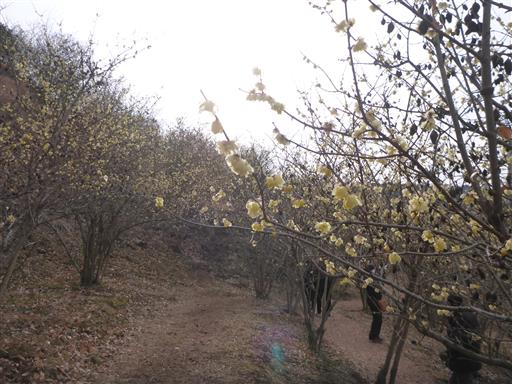
多くの花をつけている。
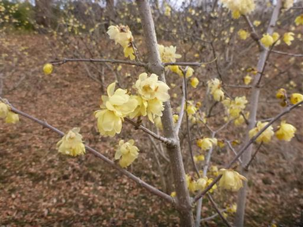
ロウバイの中で写真撮影。
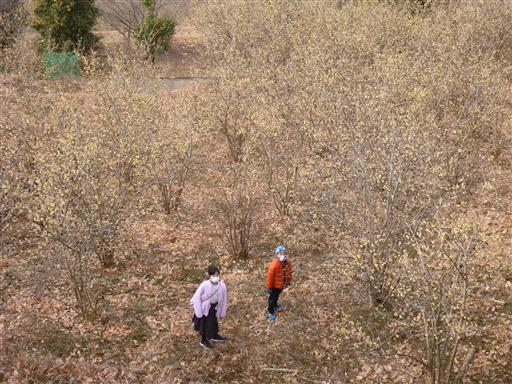
こちらがロウバイの実。中に種が入っている。
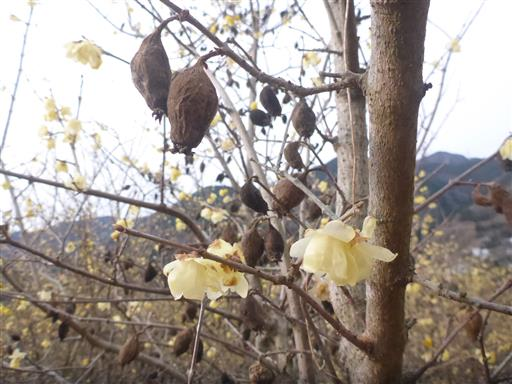
荒れ果てた茶畑。荒廃地というのは、元々は茶畑だったのかもしれない。
ここもそのうちロウバイ園に整備されるのだろうか？
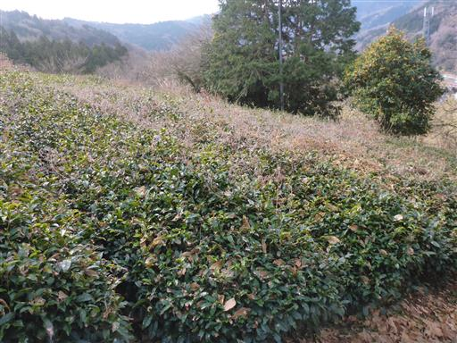
標識の上に巨大なミカンが置かれている。
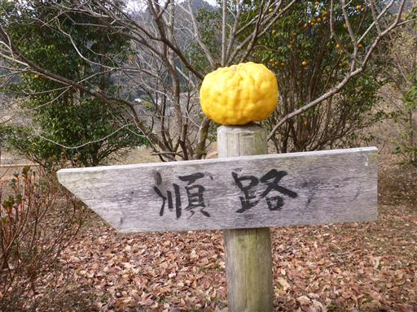
ロウバイのトンネル。もう少し花が多く咲いていたら見ごたえがあるのだが。
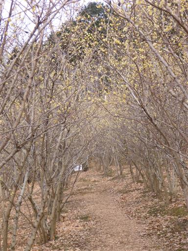
こちらはまだ幼木。
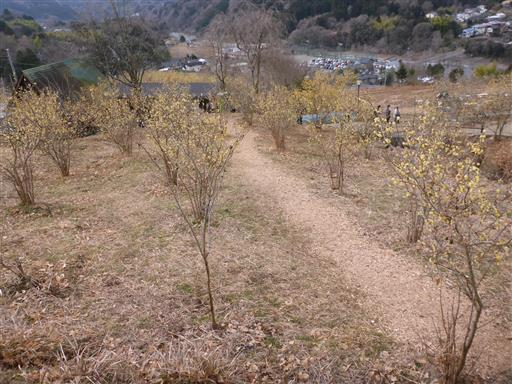
先ほど置かれていたミカンは、この木のものだろう。
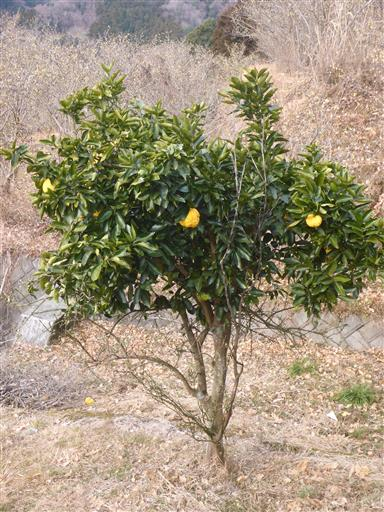
駐車場に戻ったら、少し中津川を訪れる。
橋の欄干が楽器になっていて演奏する。
前にここに来たのは7年前で、少しは上達している。
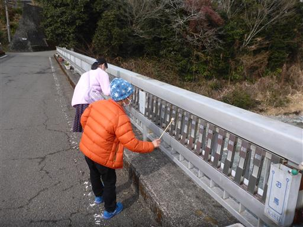
川の畔に下りるが、特にすることもなく引き上げる。
曇り空の中の小一時間の散策だったが、それなりに楽しめた。
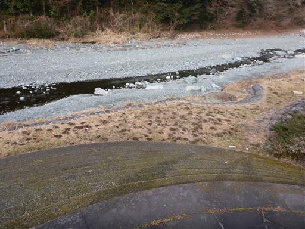